Chennai City
Chennai offers a mix of modern shopping malls and traditional markets, making it one of the best cities in South India for shopping.
From luxury brands to local handicrafts and street‑style fashion, you can find almost everything in the city.
Malls in areas like Anna Nagar, Velachery, and Perambur host big international and Indian brands, while famous markets such as T. Nagar, George Town, and Ranganathan Street give you crowded, colourful street‑shopping experiences.
It Sector
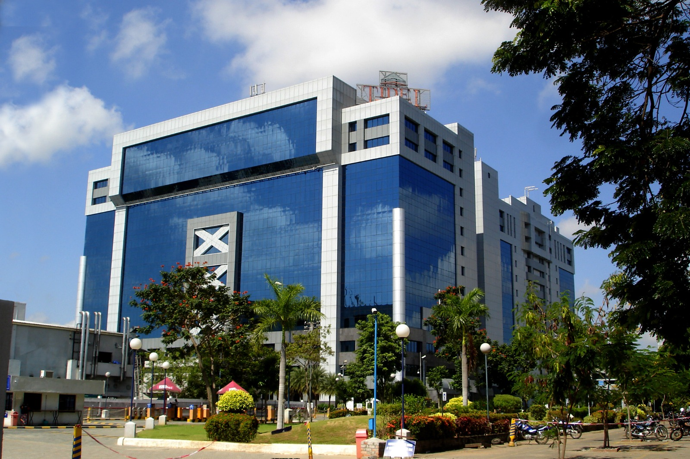
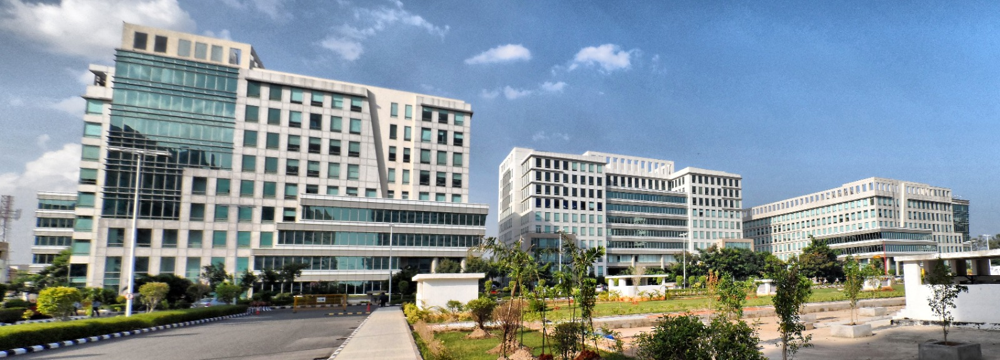
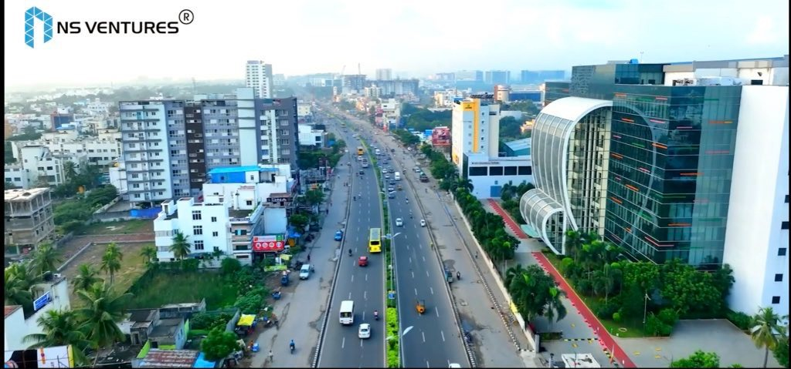
Chennai is one of India’s leading IT cities, known for its large software industry, global IT parks, and many top‑tech companies. The city is a major exporter of software and IT‑enabled services and is often ranked after Bengaluru and Hyderabad in terms of IT exports. Chennai’s IT corridor, especially along Old Mahabalipuram Road (OMR), hosts some of the largest IT parks in India and thousands of software professionals.
Education

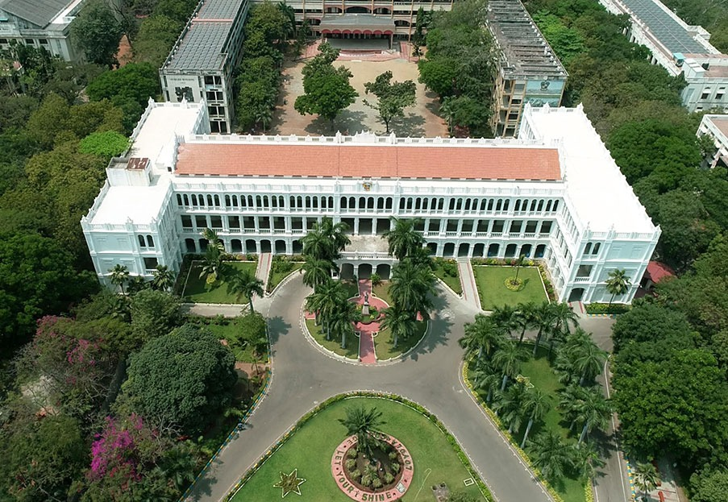
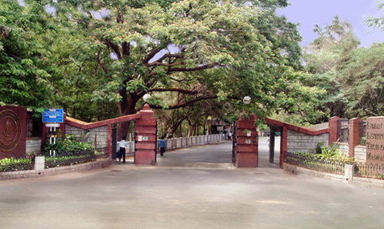
The city is a major education centre with many schools, colleges, and universities offering quality education in arts, science, engineering, medicine, and management. Students from nearby towns come here to study because of the wide range of courses, experienced teachers, and modern facilities. Whether you are looking for schools, colleges, or professional courses, this section helps you explore the main education options in the city and find useful links to official websites.
Cinema


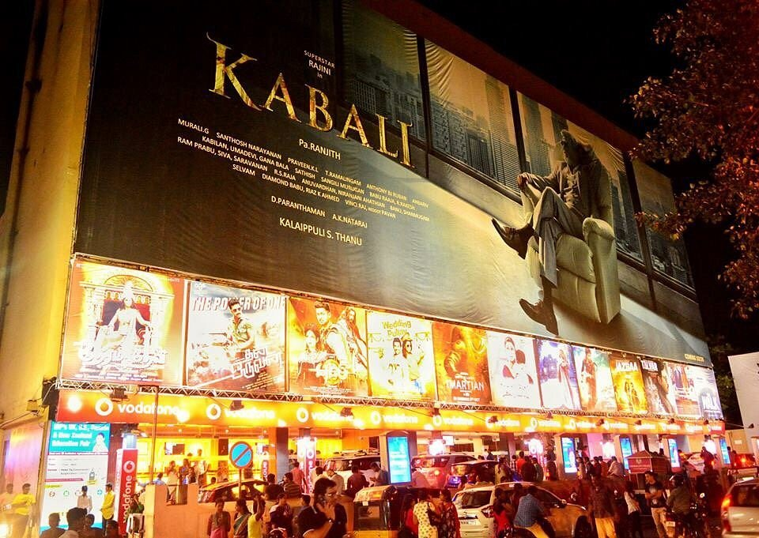
Chennai is the heart of Tamil cinema, popularly known as Kollywood, and one of India’s major film‑production centres. The city hosts many film studios, production houses, and cinema halls where Tamil movies are made, screened, and celebrated. From big multiplexes in the city to iconic studios in Kodambakkam and other areas, Chennai offers a vibrant cinema culture for both movie‑makers and audiences. This section gives you an overview of Chennai’s cinema scene, popular theatres, and key information about the city’s film industry.
Sports
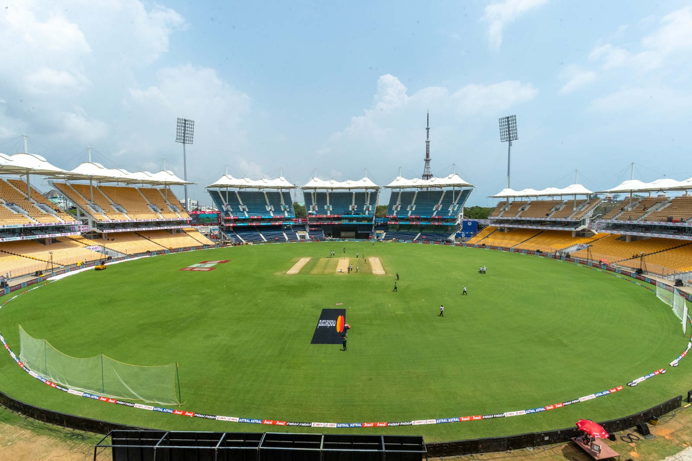
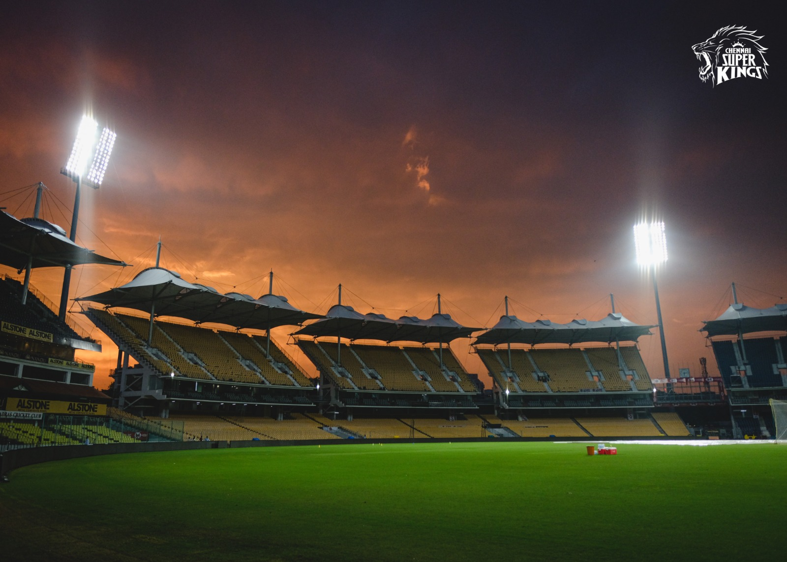
Chennai is a major sports city in South India, with stadiums, grounds, and academies for cricket, football, badminton, chess, and many other games. The city is home to popular sports venues like M. A. Chidambaram Stadium and Jawaharlal Nehru Stadium, which host domestic and international matches. From school tournaments to professional leagues, Chennai has a strong sports culture that inspires both players and fans. This section gives you an overview of Chennai’s key sports facilities, famous teams, and opportunities for sports lovers in the city.
Tourism
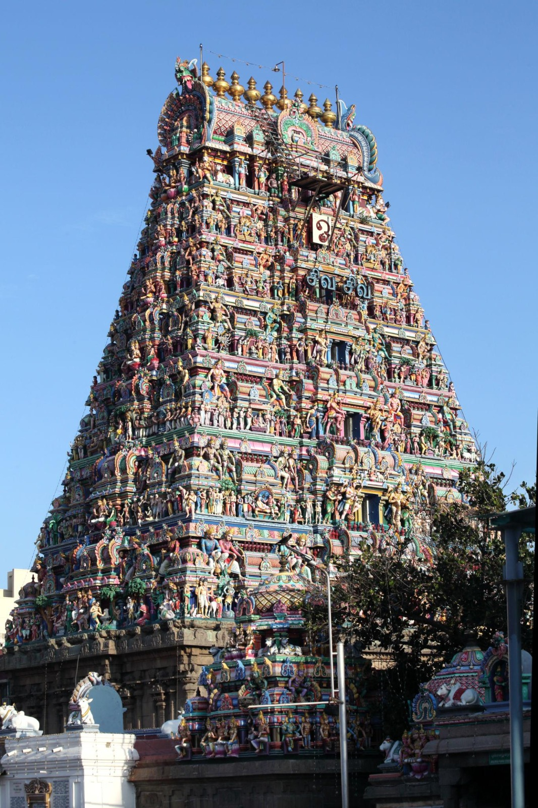
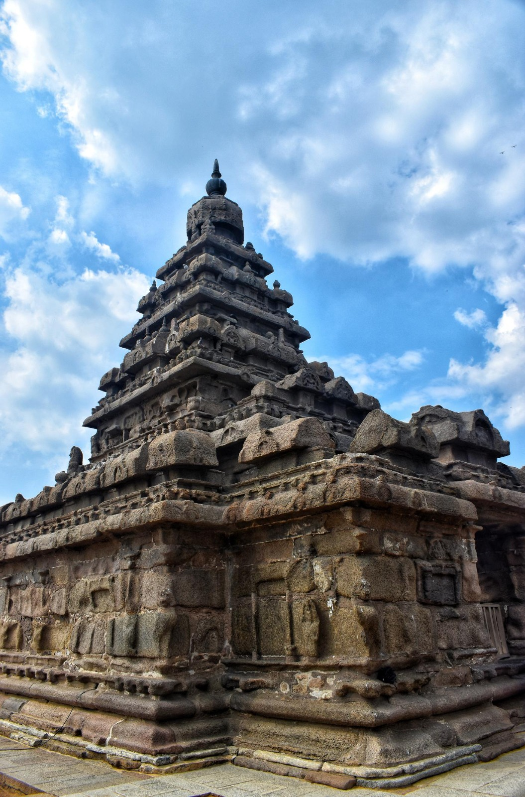
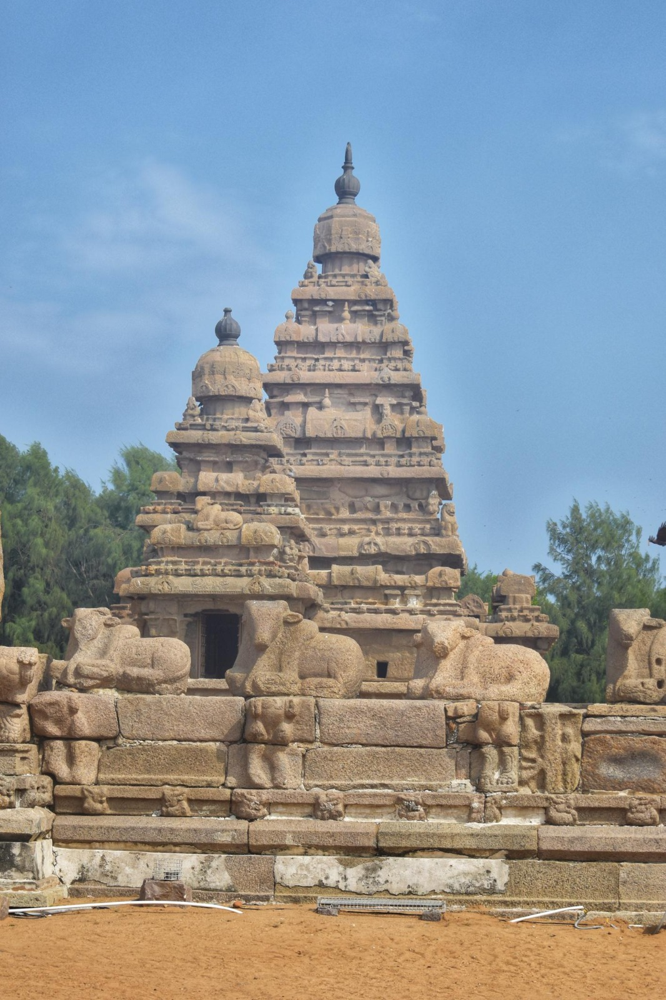
The city is a popular tourist destination known for its temples, beaches, parks, and cultural heritage. Visitors come here to enjoy historical sites, scenic landscapes, local cuisine, and lively markets and festivals. Whether you are interested in religious places, nature spots, or city sightseeing, this section helps you discover the main tourist attractions, nearby places to visit, and useful travel tips for your trip.